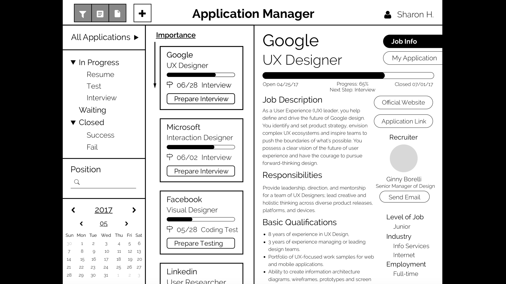

Persona
Jenny is an amateur music producer as well as a student in UC San Diego. She loves music and often makes songs on her own. When starting to voice production after successfully composing melody, she always complains that it is hard to manipulate and monitor the voice performance and music program while singing at the same time. Since finding someone who is proficient in music production is difficult, she needs effective devices and interfaces to assist her to finish those task independently in a most efficient way.
Tablet with Multi-touch (Foot)
Before and after the voice input, she manipulates the details of voice performance and music program in the control room with multi-touch tablet. Every musical instrument and singing voice will be adjusted to get successful composition.
iWatch (Inch)
Under the help of iWatch on her hand, she adjusts the most common use music features in her headphone during voice production, including vocal volume, music volume and tone. At the same time, she easily accesses the record button(for recording her voice) and play button(for listening her previous recording) for singer’s freedom. iWatch interfaces avoid complicated control elements and processes.
TV Display (Yard)
The TV will be displayed in front of Jenny at the recording room. She sings the song as lyric pop up. It takes her voice as input to raise the intonation ball at the top. The intonation section monitors her current pitch and helps to keep her voice in the correct tone. The different colors of lyric emphasizing some words help her to better express her emotion. The music score provides standard guidance when she loses tone. The bottom bar indicates the current features of music.

